The Flame Ascendant
Tracker Thresholds — what happens at what number
- 25: Flavor only — dreams, whispers, dual-vision moments
- 50: Mechanical penalty. Bhaal: disadvantage on Insight vs helpless targets. Gargauth: WIS DC 12 when entering contracts.
- 75: Involuntary acts. Bhaal: symbol auto-carves in next humanoid kill. Gargauth: Shield activates without command.
- 100: Claimed. Owning deity controls the rebirth narratively.
- Eldath 30+: Third-deity intervention becomes possible at rebirth ritual.
Design Thesis
Bitter Breath was a problem with a body. Dumal is a problem with a face.
This session is structured around one extended dialogue scene with the brother who became what Drenwal is trying not to become. Combat is the punctuation, not the sentence.
Three things make it land:
- Dumal does not want Drenwal dead. He wants Drenwal home. The threat of violence is real, but it is strategic violence — a tool to bend Drenwal, not break him. The party can survive without a single sword swing if they play it right.
- Dumal knows things. Their mother's death. Their father's death. A third sibling. The Hellrider order's secret. The lie inside Mordenkainen's cure. Hand these out as leverage, not exposition.
- Aurora is now a problem. Word of the Wish at the Palace has already reached Hell. Dumal addresses her directly. Asimov, too. Nobody is just background tonight.
Starting State (Session 4 Recap)
What happened at the Palace of Gore
- Bitter Breath defeated — not killed, reverted. Aurora used a Ring of Wishes (1 charge, now SPENT) and willed his power back whence it came. He died of old age on the throne room floor as a mortal man. The ring is now an inert silver band — useless.
- Moonkite freed and bonded to Aurora as her mount — cascading Wish effect.
- Moonbow of Celestial Warding fusion happened. Aurora's +2 longbow + Wand of Celestial Warding became one weapon.
- Haruman of the Crimson Legion killed by the party (prior session). 1/3 Fallen Three done.
- Smiler the Defiler — deal made. Party agreed to banish him to his realm in exchange for his help. DEBT UNPAID.
- Captain Grozz killed in the boss fight.
- No loot from Bitter Breath. His power, weapons, soul coins, Bhaal-marked gear — all dissolved with him when the Wish reverted his existence.
Aurora's Wish Stress (Homebrew — locked in at S4)
- STR reduced to 3. -4 to STR checks/saves/Athletics. Carry capacity ~30 lbs.
- Cannot cast spells of 1st level or higher for d4 = 2 days (pre-rolled).
- Wish is GONE. Ring had 1 charge. Inert silver band now.
- Side effect: When she casts any divination or summoning while in this state, the Moonkite appears — even if not summoned. The celestial sees through her.
RAW comparison (SRD 2024)
SRD Wish: STR 3 for 2d4 days (not 3); each spell cast until next long rest costs 1d10 necrotic per spell level; 33% chance she can never cast Wish again (irrelevant — ring is one-charge). Our homebrew is gentler on damage but harsher on spell access. If Aurora's player asks for RAW: switch to RAW for the spell-cost mechanic and roll 2d4 for days. Either choice is defensible — pick one and don't switch mid-session.
The Bhaal Carving at the Palace Exit
When the party leaves the Palace, the carved Bhaal symbol at the exit is fresh. The blood is still tacky. Dumal was here. He watched. He left this for them deliberately — a calling card.
Bhaal / Gargauth Influence — System v2
Replaces the old 0–6 tick system. Two parallel meters 0–100. Visible to player. Use the tracker buttons above to log shifts live.
Meters at Session Start
- Bhaal's Claim: 50 (carryover — base 30 + 5 each for Bloodbath kill, Bhaal hijack of Divine Intervention, Mordenkainen revealing Bhaal-blood truth, Dumal's carving at Palace exit)
- Gargauth's Bargain: 35 (base 20 + Shield use sessions + "I could catch you when you fall" offer)
- Eldath, the Quiet One: 5 (free starting from Lulu's vouch — she's a hollyphant)
Bhaal's Claim ↑
| Action | Tick |
|---|---|
| Cruel kill on humanoid (called shot, finisher on surrendered, ritual murder) | +5 |
| Critical-hit kill | +2 |
| 3+ days without a kill (Hunger) | +3/day, DC 15 WIS to cap at +5 |
| Accept Bhaal-aligned power (hijacked DI, Bhaal-marked weapon, dream "advice") | +10 |
| Witness Bhaal symbol / receive Bhaal dream / hear Dumal's voice | +1 to +5 |
| Dumal makes physical contact with Drenwal | +8 |
| Drenwal kills someone Dumal pointed at | +15 |
Gargauth's Bargain ↑
| Action | Tick |
|---|---|
| Use Shield offensively | +3 per session |
| Accept Gargauth's whispered advice in-narration | +5 |
| Make ANY bargain or contract (party-wide trigger, Drenwal-witnessed) | +5 |
| Ask Gargauth a direct question | +2 |
| Cast Light-domain spell flavored with Shield-imagery | +1 |
| Accept Gargauth's offer to "catch the soul" | +25 (one-time, massive) |
Both Meters ↓ (these matter)
| Action | Tick |
|---|---|
| Devotional act to a third deity (overt prayer, public service in a god's name, channel Light AND name source) | −5 from highest |
| Refuse offered power with overt narration | −3 from offerer |
| Spare or heal an enemy Drenwal could have killed | −2 Bhaal |
| Personal cost paid for a virtuous outcome | −3 from highest |
| Speak truth about his Bhaal blood to a non-party NPC | −5 from Bhaal |
| Lulu interceding (1×/session max) | −2 from highest |
The Cure Pressure (the actual question)
- The highest meter wins by default.
- A third deity can intervene IF Drenwal has ≥ 30 devotional points with them.
- Lulu's god = free 5 devotional points (Lulu vouches by existing).
- The Moonkite's patron god = another candidate (Session 6+ thread).
Track devotional points visibly. Three columns on your DM screen: Bhaal / Gargauth / Eldath.
Why v2 is better than the old 0–6 system
- Specific actions tick specific amounts (no DM guessing)
- Player can SEE the meters, so they can play toward outcomes
- Reductions are possible (old system only went up)
- Multiple deities competing creates a real strategic choice
- The "third option" requires sustained narrative work, not a single moment
Pacing — 5 Hours
| Block | Time | Content |
|---|---|---|
| Cold Open + Palace aftermath | 30 min | Body of the mortal man, Moonkite bonding, Aurora's STR 3 reveal, Bhaal carving at exit |
| Act 1 — The Departure | 45 min | Choices about the body, Smiler debt, direction to head, smog thinning |
| Act 2 — The Approach | 45 min | Travel, whisper-fog, Vix the herald, Lulu reacts to celestial scent |
| Act 3 — Dumal Arrives (First Cut) | 1h 15min | Standoff, opening dialogue, family reveal, the Offer |
| Act 4 — The Second Cut | 1h | Either negotiation deepens into revelations, or it tips into a tactical fight |
| Act 5 — The Cliffhanger | 15 min | Dumal departs (alive). What he leaves behind. Fallen Three teaser. |
Cold Open
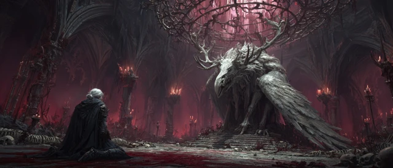
-a through -d variants in Images/session-5/ to swap.The throne room of the Palace of Gore is suddenly very quiet. Above you, the iron cage that held the Moonkite hangs open — its bars peeled back like the petals of a flower. The Moonkite itself is on the floor, head down, ribs heaving. Silver light leaks from cracks in its skin and pools beneath it, slow as honey. Its wing twitches, then folds. It is alive. Five feet from it, on the floor: an old man. Eighty, maybe ninety years old. White hair like wet straw. Skin like rice paper. He is naked under the velvet robe someone — something — once draped on his devil-self, and the robe is now too big for the shrunken body inside it. His eyes are open and unblinking and brown. Not yellow. Brown. He is not breathing. The veins on Aurora's hand — the hand still wearing the Ring of Three Wishes — are silver. Not bruised silver. Lit silver. Like the Moonkite is leaking out of her fingers too. Drenwal — your Shield is humming. Not whispering. Humming. The kind of hum a thing makes when it's seen something interesting. Outside, somewhere up the gore-blood tunnels — bone, settling. The Palace shifting around the death of its master. Or something walking.
Act 1 — The Departure PLAYED
The Body PLAYED
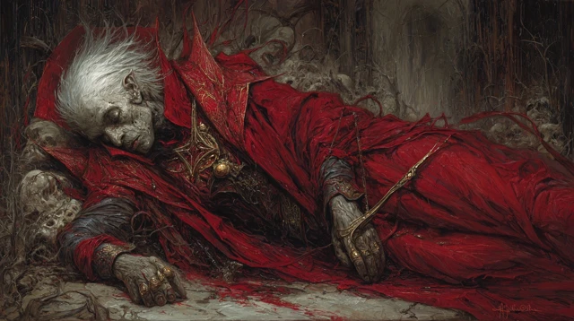
The mortal man's body is on the floor. The party searched him — nothing on him. No items, no marks, no identifying objects. Just a dead old man in a robe that doesn't fit. Whoever he was, the Wish took it with him.
What the party did with the body
(Resolve as it played at the table — the choice has already been made by the time you're reading this.)
| Choice | Consequence (apply retroactively if needed) |
|---|---|
| Left it | Dumal will desecrate it (off-screen). +3 Bhaal if Drenwal allowed it. |
| Burned it | Clean closure. −2 from highest. Aurora could use a Moonbow shot to ignite — symbolic. |
| Carried it back to the ship | −4 from highest if they did this. Plot seed: the body becomes a question — who was he? A future investigation hook. |
The Moonkite Stands
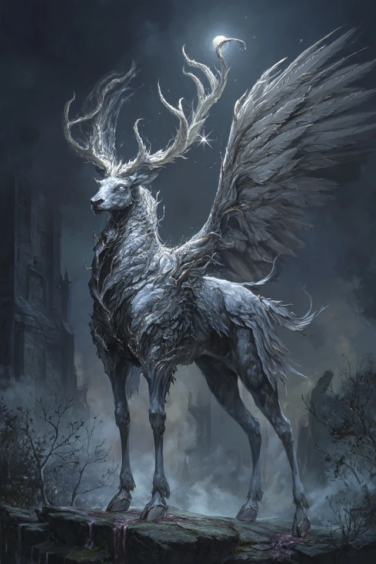
The Moonkite raises its head. It is the size of a small horse, antlered, with feathered wings and feline grace. Its eyes meet Aurora's. There is no speech — the bond is older than language.
Aurora gains
- The Moonkite as mount (statblock TBD by DM — Pegasus chassis + celestial features works)
- A passive sense of when celestial magic is being cast within 1 mile
- A weight in her chest she'll come to understand as responsibility. Not a debuff. A presence.
The Carving
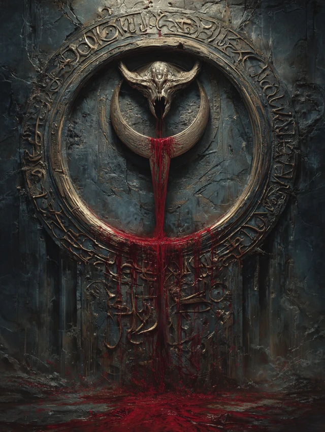
The carving is on the inside of the gate — facing the throne room they just left. Not facing out. It was carved for the master of the Palace. It was carved for Bitter Breath, by someone who walked past the cage every time he visited. The Bhaal symbol. A circle of blood, with a downward dagger inside it. The blood is still wet. Wet for hours, maybe a day. Below the symbol, in a different blood — finer, careful, calligraphic — three words: "He misses you."
Tracker: Bhaal's Claim +5 (already pre-loaded; apply now if not).
Departure — Back to the Lady Vengeance PLAYED
The party made it out of the Palace of Gore and back to the Lady Vengeance. The ship is intact and afloat on the sluggish river of blood. The gore-smog has thinned but not vanished. Birds (or things that resemble birds) circle high above. Nothing is attacking. Everything is watching.
| Route from here | Outcome |
|---|---|
| South by river — towards Olanthius's wandering ground | Dumal intercepts en route. Default path. |
| East — towards Bel's Forge | Dumal intercepts at a riverside shrine. Same encounter, different deck-side terrain. |
| Tie up and rest at the Palace mooring | Dumal walks down to the dock to find them. Tightest engagement range. |
Act 2 — The Approach
Aurora's Mount Test
About 30 minutes out, Aurora attempts to mount the Moonkite. The first attempt:
Aurora rolls STR (Athletics) at -4 (STR 3). DC 5 to mount.
- Success: She gets on. The Moonkite kneels for her. Beautiful moment.
- Failure: She slides off. The Moonkite waits patiently. Asimov has to boost her up. She is the Wish-wielder, and she cannot get on her own mount. Lean into the irony.
Lulu's First Sniff
Lulu — riding on someone's shoulder or trotting alongside — stops. Looks south. Her trunk lifts.
Lulu: "That. That smell." (Lulu's voice is warm, child-soft, slightly slurred from millennia of damage.) "That's not... that's not a devil. That's something else. That's a brother. A brother who chose. A brother who was loved and chose anyway." She looks at Drenwal. She is suddenly, completely lucid for the first time in weeks. "I am so sorry, little flame. I am so sorry."
Bhaal influence (Lulu effect): −2 from highest meter (one-time, per session).
The Herald — Vix the Imp CURRENT SCENE
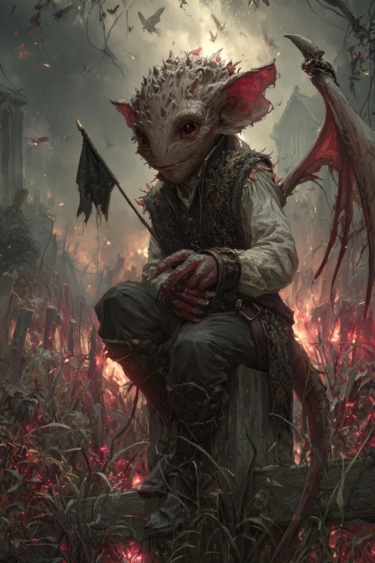
The Lady Vengeance has been on the move (or moored, if they chose to rest). A single imp descends from the smog and lands on the deck rail — or a nearby piling if they tied up — twenty feet from where the party stands. Holding a small black flag — plain, no sigil. A parley flag.
Vix: (clearing throat, too polite) "With the deepest respect of His Ascendancy, Dumal of Elturel, called the Flame, this herald requests parley with the company of Drenwal of Elturel and his honoured companions. His Ascendancy will arrive within the hour. He requests that no spells be cast at him during the approach. He asks for nothing else." The imp pauses. Then, brightly: "He also asks that the lady with the Wish ring not make any more of those, please. He'd consider it a personal kindness." It bows. Then it stays there, on the post, waiting for a reply. It does not leave until one is given.
Player responses
| Response | Consequence |
|---|---|
| Accept parley | Imp bows, vanishes. Dumal arrives in 45 minutes. |
| Refuse parley | Imp shrugs: "He'll come anyway, but he'll be cross." Vanishes. Dumal arrives in 20 minutes, hostile from the start (-1 to all his peace-options). |
| Kill the imp | Dumal arrives in 10 minutes, furious. Breaks parley before it begins. Initiative rolled the moment he's in sight. WORST PATH. |
Drenwal's Hunger Check
It has been 5 in-game days since Drenwal's last kill (Bloodbath two sessions ago doesn't count — Asimov's Rasheem consumed him).
DC 15 WIS save:
- Success: Hunger held in check. Tracker: Bhaal +3 (capped instead of full +5).
- Failure: Tracker: Bhaal +8 (full hit). Dreams that night are worse. He wakes seeing red.
Act 3 — Dumal Arrives — The First Cut
The Approach
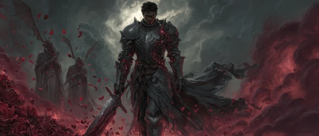
Dumal does not come down a road. He walks out of the smog itself — like the smog parts for him. Behind him, four shadowy shapes follow at a respectful distance: three Bhaal cultists (Cult Fanatic) and one Bone Devil bodyguard.
He is tall — taller than Drenwal remembered. Hellrider plate, but corrupted — the steel has veins of red-glowing rune-work, like cooling magma. The lance on his back is a Bhaal-marked weapon — its blade is grey-black, perpetually wet-looking. At his hip: a small bone-handled shortsword — the ritual blade. His face is the worst part. It is Drenwal's face. Older — five years older — leaner, scarred along the jaw, but unmistakably the same blood. Same eyes. Same set of the mouth. He smiles, and it is Drenwal's smile from when Drenwal was a child. He stops thirty feet out. He holds up both hands, palms open. Empty. "Little brother. You look terrible. Have they been feeding you?"
Sample Dialogue
Use what fits, improvise the rest. Dumal must be charming, articulate, sad. Charismatic cult-leader who actually loves his brother. Not cackling villain.
Opening (after Drenwal speaks first, whatever he says)
Dumal: "I know. I know. We have much to say to each other and I am keeping you. Let me offer some preliminaries. One — I am not here to fight you. Not today. I am keeping my hands where you can see them. If you attack me, I will defend myself, but I will not begin. Two — your companions are welcome to listen. I will not speak around them. The Wish-wielder, especially. She and I will have words. Yes, lady, you. Hello." He nods at Aurora. Direct. Polite. Not threatening. "And the rogue with the lamp. Hello, friend. We have not met. Your master is going to eat you eventually — you know that, yes? He won't be subtle. Lamps are patient. I would offer counsel, but you have not asked, so I will not." He looks back at Drenwal. "Three — I have spent six years preparing to see you again. The first half of those years I spent learning to speak. I want you to know I am choosing every word. So listen carefully."
The Childhood Name
"Den. May I call you that? I always did. Mother used to scold me — she said it was a foolish name for a Hellrider's son. She was wrong about a great many things, but she had pretty hands. Do you remember her hands? I do."
This is the moment Drenwal realizes Dumal knows everything Drenwal half-remembers and more. The audience should feel the air leave the room.
First Reveal — Mother
"She did not die of the wasting sickness. I want you to know that. I learned this later — much later. I would not have believed it if Bhaal himself had not whispered it to me, and even then I held it for years before I accepted it. She was one of us, Den. A Bhaalspawn. Like me. Like you. She knew it. She had known her whole life. And when she had us — when she saw what we were going to be — she made a choice. She poisoned herself. Slowly. Years. So that we would think it was illness. She thought she could starve the line out of us by dying early. She thought if she did not feed Bhaal's claim by living for him, he would forget us. (He laughs, very softly.) She was wrong. But she was brave. I want you to know she was brave."
Second Reveal — Father
"Father did not die at the Wall, either. The Hellrider order knew what we were. They had known about Mother. They watched her for forty years and they watched us from the cradle. There was a cult inside the order, Den. Bhaal-sworn. They had been there for generations. Hellriders by day, knife-priests by night. One of them killed Father in his sleep, the night before the Descent. Slit his throat with a ritual blade. (He touches the bone-handled shortsword at his hip.) This one, actually. It was passed to me. I was — flattered. Now I know better. Mordenkainen knows all of this. He has known for sixty years. Ask him. Ask him why he did not tell you when he had you in his tower."
Third Reveal — The Sister
"There is one more of us. Did you know? Of course you did not know. Mother died before she was born. Father never spoke her name — to his last breath, he was protecting her. She is alive. She is young. She is being raised in a place where Bhaal cannot find her yet — but Bhaal is patient and the place is not perfect. I know where she is. I have not gone for her. I am waiting. (A pause. He watches Drenwal's face.) If you come home, brother, you and I will go to her together. We will protect her. Not Bhaal — we. The two of us, between her and the world, the way it was supposed to be. If you do not come home... I will go for her alone. And what becomes of her then — well. That is on your conscience."
Aurora — Direct Address
"Lady Wish-wielder. I will not pretend I am not afraid of you. I am. You did something at the Palace that gods notice. Several gods have already noticed. Be very, very careful what you do next. I will offer you one piece of free counsel — Wish does not work on me. Not in the way it worked on the devil. I am not a devil. I am a man who said yes. There is nothing to revert me to. The man I was chose this. You can kill me with the ring, but you cannot undo me. Do not try. It will cost you more than you can afford. Also — your mount is beautiful. Truly. Please tell it I said so. It has nothing to fear from me."
Asimov — Direct Address
(He squints, then smiles.) "Asimov. Asimov. Are you the Asimov who took the Vortigern bounty in the Material six years ago? I read about it. You went under their guildhouse. I respect that. Your lamp is a tool of the Outer Planes. (Pause.) That's a polite way of saying it. The less polite way is that your genie is using you as a cup, and one day it will tip the cup over. But that is your business. I will not contract you. Bhaal does not contract. (Smiles.) Bhaal claims."
The Mordenkainen Accusation
"Did Mordenkainen tell you, Den — that the only way to be reborn out from under Bhaal's claim is in the eyes of a god who has never known of you? That is what he said, yes? Die and be reborn in the eyes of another god. He wrapped it pretty. Here is what he didn't say. Every god in this firmament knows about us. Bhaal has bragged. Bhaal makes a point of bragging. The pantheon has read our names. There is no god who has not heard of Drenwal of Elturel, the Hellrider Bhaalspawn who walks in Light. They all know. Which means the only god who can claim you in rebirth is the one who has already claimed you. Mordenkainen knew. He sent you on this errand to give you something to do — because he believes you are already lost and he is kind enough not to say so. Or — and this is the version I prefer — he is lying. He wants you to fail and fall into Bhaal's hands so the third option — a small god, an obscure god, a god who has not heard — has time to be found and bargained with. By him. Mordenkainen is building a god, Den. A god for you. And he has not told you because he needs you to keep moving while he works. Either way: you are being handled. Bhaal does not handle. Bhaal waits. Come home."
The Offer (the main one)
Dumal: "Here is what I am asking. Not demanding. Asking. Come with me. Now. I will take you to her — to our sister. We will go together. You will not have to fight a single battle. Bhaal will hold his hand from you for a year. He has agreed. I asked. One year. Walk with me. Meet her. See what you think when you have seen her. If at the end of the year you wish to come back to your companions, you may. I will let you. Bhaal will let you. You will keep everything you have learned. You will lose nothing. Or — If you say no — I leave. I leave today. I do not threaten you. I do not bring the wrath. I will go for her alone. And what she becomes when only I am raising her — (a slow, deliberate smile) — is what she becomes."
The Crisis Point
The moment of greatest tension. Drenwal's player must decide.
| Drenwal's Choice | What Happens |
|---|---|
| Accept the deal — go with Dumal for a year | Drenwal leaves the party. Bhaal +25 (massive). Aurora and Asimov continue without him for a session arc. DM: this is a real option, not a fakeout. Don't railroad against it. Becomes Drenwal's player's solo arc until next session — or co-DM with them. |
| Refuse, ask for time | Dumal nods. "Time is what I have been giving you, Den. Take more. But know I will not ask twice. The next time we speak, it will be because she is in danger." He withdraws. No combat. Gargauth +5, Bhaal −3. |
| Refuse, demand the sister's location | Dumal: "No. That would be cheap. You earn her by coming home, or you lose her by staying." Combat may trigger if Drenwal pushes. |
| Refuse and attack | Initiative. See Act 4 combat path. |
| Aurora threatens / bluffs Wish | Dumal smiles. He uses his Bhaal-Sight to see the dead ring on her hand. "That ring is empty, lady. I can taste it from here. Spent at the Palace. You wanted me to fear it — I do not. I respect what you did. But I am not bluffable." Bluff costs Aurora 2d6 narrative HP. |
| Asimov tries Soul Capacitor | Auto-fail. Dumal is Bhaal-anchored — no soul to extract while Bhaal holds him. Rasheem speaks (audible to all): "Hands off, hunter. That one's not yours. That one's not anyone's but his god's." |
| Drenwal asks the sister's name | "Her name is Senna. She is six." Bhaal +2 for accepting personal info. |
| Drenwal asks about Mordenkainen | Dumal repeats the accusation more bluntly. Mordenkainen has been to Avernus seven times in the past decade hunting for an unclaimed god. Names her: "Eldath. The Quiet One. They called her Mother of the Waters once, when there were still waters that wanted a mother. Her faith was peace, and peace did not survive the Sundering, let alone Avernus. Two old women keep her last shrine in a village called Tarsweald, beside a spring she once blessed. Mordenkainen has visited them four times this year. Ask him." Plot seed. |
Act 4 — The Second Cut
If the Conversation Continues (Negotiation Path)
Dumal will offer:
- Olanthius's current location — to the hour. He's in the Shattered Cathedral, three days' ride south. Given freely. "He is suffering. Take that from him. He earned the rest."
- The Blood Pay timing. Citadel manifests on a specific tide of the Styx, every 33 days. Next: 17 days. They have a deadline.
- NOT Senna's location. Ever. Not bargained, not threatened.
If Combat Triggers (the Tactical Fight)
Roll initiative. See Dumal's statblock below. He does NOT fight to the death.
Dumal's combat doctrine
- Round 1: Cultists and Bone Devil engage. Dumal walks slowly forward.
- Round 2: Dumal arrives. Targets Drenwal first. Uses Bhaal-Marked Strike for massive damage + lingering sigil.
- Round 3+: Dumal seeks to ritual-kill the Cult Fanatics himself — single attack, his own side, to demonstrate Bhaal's hunger. Theatrical. Drenwal sees it.
- At 25% HP: Dumal disengages. Bone Devil covers. Throws Bhaal Smoke (20ft cube, opaque, 2 rounds invisible inside). Gone.
Final line as he disengages: "Heal him, Wish-wielder. He is going to need it. So is your Quiet One."
Aurora's Wish — Not An Option
Aurora's ring is empty. If she pretends otherwise, Dumal calls the bluff instantly (see Act 3 table). She has no Wish access this session.
What she DOES have
- Moonbow of Celestial Warding (primary weapon now)
- Her warlock spell suite (when the d4-day spell-block expires)
- The Moonkite as battlefield-control (mount with celestial presence)
- Her wits — and the fact that Dumal respects her for the Palace
Act 5 — The Cliffhanger
Dumal Departs
Whatever the outcome — accept, refuse-with-time, refuse-and-fight — Dumal leaves alive this session.
Dumal raises a hand in farewell. It is the same hand he used to wave with as a child, before he knew what he was. He does not look back as he walks into the smog. Just before he is gone, he calls over his shoulder, almost cheerful: "I will see you within the moon, Den. With love, brother. Try not to die before then. It would be… disappointing." And he is gone.
What He Left Behind
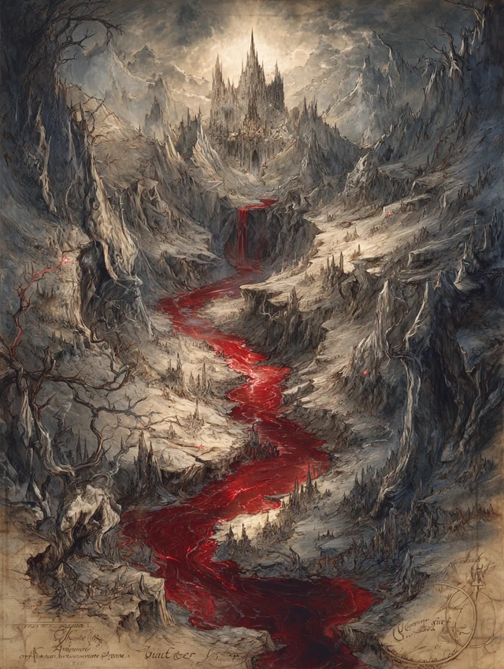
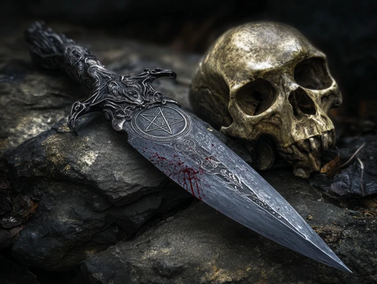
After Dumal departs, the party finds — pinned to the Lady Vengeance's mast (or a deck timber, if no mast) by the bone-handled shortsword from his hip — a folded parchment. A small, hand-drawn map. He left it on their ship while they argued with him. None of them saw it happen.
The map shows:
- A circle in the south labeled "Olanthius — Shattered Cathedral. Alone. Easy."
- A circle in the east labeled "Bel — Forge. Hard. Watch your tongue."
- A circle in the far north labeled "Bleeding Citadel — manifests in 17 days. Be there or wait another month."
- A small mark in the west labeled simply "Her." No further detail.
The Bone-Handled Shortsword
Left as a gift, or a challenge. Now the party's. DM call: cursed, attuned to Bhaal, or just a knife? Suggestion: Bhaal-marked dagger, +1, +1d6 necrotic.
| State | Bhaal Tick | Effect |
|---|---|---|
| Carrying unattuned (in pack, not on belt) | 0 | Inert. |
| Carrying on person (belt, sheath) | +1/session | Whisper-dreams flavor only. |
| Attuned (uses 1 of 3 slots) | +5 immediate, +1/session | +1 / 1d6 necrotic. Drenwal hears Dumal's voice during long rests. |
| Destroyed (forge, holy ground, Eldath shrine ideal) | −10 Bhaal | Permanent plot beat. |
| Cleansed via Remove Curse (3rd lvl) | −3 Bhaal | Becomes mundane +1 dagger. Drenwal must cast or witness. SRD link |
Tracker Update — Announce Visibly
Update both meters based on Drenwal's choices. Sample math if he refused with time, didn't accept any contract, and refused the dagger:
- Bhaal's Claim: 50 → +5 Dumal contact, +3 witness, +3 5-day hunger, −3 refusal narration, −3 asking imp's name, −2 Lulu = 53
- Gargauth's Bargain: 35 → +3 Shield humming, +5 direct question, −3 refused whisper = 40 (or whatever the math gives you)
The Final Beat
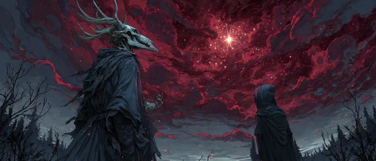
The smog is thinning. Somewhere overhead, behind the gore-clouds, a star is visible. One. The first time in weeks. The Moonkite is looking at it. Aurora is looking at it. The Moonkite makes a low sound — not a call. A welcome. Drenwal looks at the map in his hand and the bone dagger driven into the deck at his feet and the place inside himself where his Hunger lives. Asimov breaks the silence: "...so. Who's Senna?" END SESSION.
Dumal — Statblock
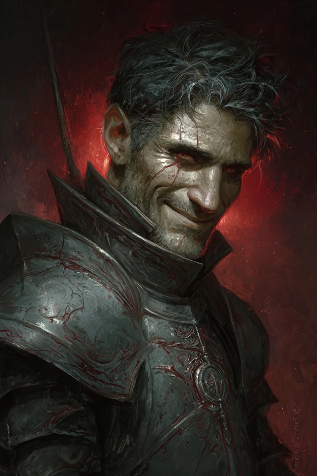
Dumal of Elturel, the Flame Ascendant
Armor Class 19 (Bhaal-corrupted plate, +1)
Hit Points 220 (24d8 + 96)
Speed 30 ft
Saving Throws STR +9, CON +8, WIS +7, CHA +8
Skills Athletics +9, Insight +7, Intimidation +8, Perception +7, Religion +6
Damage Resistances necrotic, fire; bludgeoning, piercing, slashing from nonmagical weapons
Damage Immunities poison
Condition Immunities charmed, exhaustion, frightened, poisoned
Senses truesight 60 ft, passive Perception 17
Languages Common, Infernal, Abyssal
Challenge 13 (10,000 XP) · Legendary Resistance 2/day
Bhaal's Anchor. Wish, Plane Shift, Banishment, and other reality-altering spells targeting Dumal fail unless they roll above a DC 20 caster-ability check. Bhaal holds his soul.
Bhaal Sight. Auto-detects any creature with the "Bhaalspawn" descriptor within 1 mile. Knows their current emotional state.
Hunger Pact. Does not need to eat, sleep, or breathe. When he kills a humanoid, he heals 20 HP.
Magic Resistance. Advantage on saves against spells and magical effects.
Legendary Resistance (2/day). If Dumal fails a save, he can choose to succeed instead.
Actions
Multiattack. Three attacks: two with Lance of Bhaal and one with Ritual Dagger (or a Bhaal-Marked Strike instead of his second Lance attack once per turn).
Lance of Bhaal. Melee Weapon Attack: +10 to hit, reach 10 ft, one target. Hit: 11 (1d12 + 5) piercing + 9 (2d8) necrotic. If target drops to 0 HP, Dumal regains 20 HP.
Ritual Dagger. Melee Weapon Attack: +9 to hit, reach 5 ft, one target. Hit: 7 (1d6 + 4) piercing + 4 (1d8) necrotic. On crit against a Humanoid, carves a Bhaal symbol into them (permanent unless removed by Remove Curse).
Bhaal-Marked Strike (Recharge 5–6). Replaces one Lance attack. As Lance of Bhaal, but on hit, target must succeed on DC 16 CON save or take additional 27 (6d8) necrotic + gain Bhaal Mark: disadvantage on all saves against Bhaal-aligned effects for 24 hours. Drenwal automatically fails this save (Bhaal blood resonance) — play this for the horror, not the damage.
Bhaal Smoke (1/day). Exhales 20-ft cube of opaque, sentient red smoke. Creatures inside are heavily obscured to those outside. Dumal can move through it without obstruction. Lasts 2 rounds.
Bonus Actions
Bhaal's Whisper. Speaks a single sentence to a target within 60 ft. DC 16 WIS save or be frightened of Dumal for 1 round. Drenwal auto-fails unless he spent the prior round actively praying to a non-Bhaal deity.
Legendary Actions (3/turn)
Step (1 action). Move up to half speed.
Bhaal's Hand (2 actions). A spectral red hand emerges from the ground within 30 ft and attacks: +9 to hit, 9 (2d8) necrotic, target is grappled (escape DC 17).
Sibling Strike (3 actions, only against Drenwal). One Lance attack with advantage. On hit, Drenwal saves DC 16 WIS or hears Dumal's voice in his head for 1 hour after combat — Dumal narrates Drenwal's actions in real-time, mockingly. Roleplay-only effect, no mechanical penalty. Bhaal +5 if it lands.
Supporting Cast (Combat)
Bone Devil (SRD 2024)
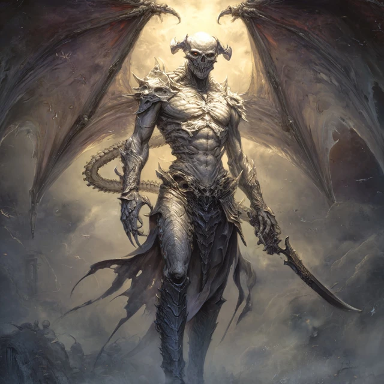
Bone Devil
AC 19 · HP 142 · Speed 40 ft, fly 40 ft
Saves INT +5, WIS +6, CHA +7 · Senses darkvision 120 ft · Languages Infernal, telepathy 120 ft
Damage resistances cold; B/P/S from non-silvered nonmagical · Immunities fire, poison · Condition imm. poisoned
Devil's Sight + Magic Resistance.
Multiattack. 2 claws + 1 sting.
Claw. +8 to hit, reach 10 ft, 8 (1d8+4) slashing.
Sting. +8 to hit, reach 10 ft, 13 (2d8+4) piercing + 17 (5d6) poison; DC 14 CON or poisoned 1 min (save at end of each turn).
Tactic: Flies above the dialogue scene during Act 3 (silent overhead). Bodyguards Dumal in combat. Targets the highest-damage party member. Use the vertical axis.
Bhaal Cultists ×3 (Cult Fanatic — SRD 2024)
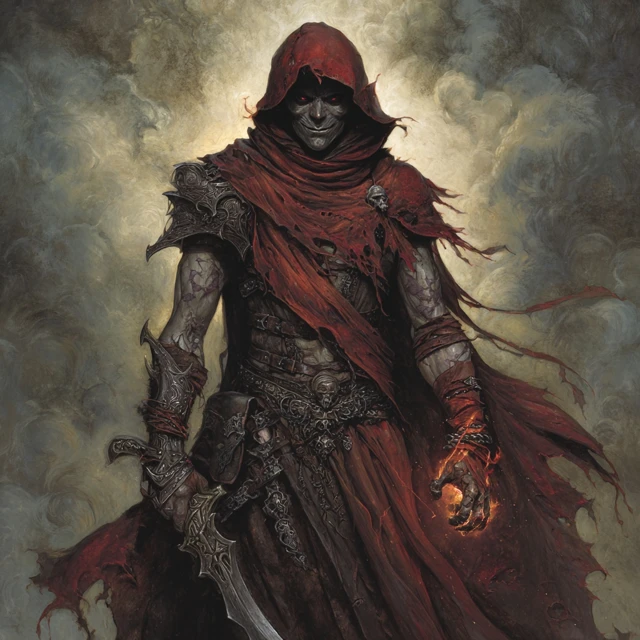
Cult Fanatic ×3 (Bhaal-sworn)
AC 13 · HP 22 (corrected from prior 33 — RAW is 22) · Speed 30 ft
Dark Devotion. Advantage vs charm/fright.
Spellcasting (4th-level cleric, DC 11, +3 to hit).
Cantrips: Light, Sacred Flame, Thaumaturgy
1st (4 slots): Command, Inflict Wounds (2d10 necrotic touch), Shield of Faith
2nd (3 slots): Hold Person (DC 11 WIS, paralyzed), Spiritual Weapon (1d8+2 force, BA)
Multiattack. 2 dagger attacks.
Dagger. +4 to hit, reach 5 ft or 20/60 ft, 4 (1d4+2) piercing.
Tactic: Two stay back: Spiritual Weapon + Hold Person. One charges Drenwal with ritual dagger. Dumal will kill these himself in Round 3 for theatrical effect if combat is going his way.
Vix the Imp (SRD 2024)
Vix — Dumal's Herald
AC 13 · HP 10 · Speed 20 ft, fly 40 ft
Sting. +5 to hit, 1d4+3 piercing + DC 11 CON or 3d6 poison.
Invisibility (at will) until it attacks.
Shapechanger: rat / raven / spider forms.
Polite. Won't attack unless cornered. Has biscuits in his pouch (irrelevant flavor). If killed: triggers Dumal's furious-arrival path. Don't kill the imp.
Lore (DM Use — Dumal Can Reveal If Pressed)
The Hellrider Cult of Bhaal
- Founded ~120 years ago, post-Descent of Elturel preparation
- 13 members at peak, dormant within the order
- Recognized each other by scarred forearms with a single small cut on the right pinky tendon
- Father (Drenwal's father) was killed by them
- Destroyed during the Descent — Zariel's forces did not distinguish
- Dumal believes himself the last of this lineage outside Bhaal's direct service
Mother — Vyssa Ardent
- Bhaalspawn, knew it from age 9
- Married a Hellrider to die in service to the Light — suicide-by-religious-life
- Had two children anyway (it surprised her — Bhaal "permitted" it for his own reasons)
- Slow-poisoned herself with elven nightroot for 4 years, starting when Drenwal was 6
- Died when Drenwal was 10. Drenwal believes wasting sickness.
- Buried in Elturel — her grave, now in Hell, may be findable
Father — Ser Halvard of Elturel
- Senior Hellrider, decorated, devoted to the Morninglord
- Did NOT know about Mother's nature
- Killed in his sleep the night before the Descent by the cult, with the ritual shortsword Dumal now carries
- Dumal claims the killer was a man Halvard had broken bread with for thirty years
- Drenwal was 18 when this happened. Believed his father died in the Descent.
Senna — the Sister
- Born to Mother in secret, smuggled out of Elturel by a Harper named Issa before Mother's death
- Currently 6 years old
- Living in a small farmhouse on the southern Sword Coast, raised by Issa as her own daughter
- Issa does NOT know what Senna is — paid to raise "a noble child in hiding"
- Dumal has known Senna's location for two years and has not approached her — he is waiting for Drenwal
- If Drenwal asks: how do you know about her? "Bhaal told me. He likes to talk about family."
- Senna has not shown any signs yet. She is six. It typically begins at nine.
Eldath — The Quiet One, Mother of the Waters
- Demipower of the Faerûnian pantheon — neutral good (some sources lawful good). Faded since the Time of Troubles; once a greater power.
- Domains: peace, quiet places, springs, pools, waterfalls, druid groves, refuge for the hunted. Spell domains: Peace, Life, Nature.
- Symbol: a waterfall pouring into a still pool.
- Doctrine: non-violence absolute. Her clerics ("the Eldathyn," traditionally women) take a vow against bloodshed. No spell cast in her name may directly harm.
- Worship: silence, libations to a spring, planting of trees, sheltering of fugitives. No sacrifice, no song, no fire.
- Temples: almost none remain. Mostly tiny roadside shrines at natural springs in groves. Most priestesses are solitary or in pairs.
- Our campaign: last shrine sits beside a blessed spring outside Tarsweald in the Western Heartlands. Two priestesses keep it: Old Mara (70s) and her niece Tessa (20s).
- Mordenkainen has visited them four times in the past year (per Dumal's intel).
- Why she works as the third option: Bhaal has nothing to brag about to a goddess of peace. Her faith has shrunk so far she barely registers in the divine politic. A Bhaalspawn reborn under her gaze is the maximum theological statement — and the maximum insult to Bhaal.
- If Mordenkainen is brokering Drenwal's rebirth: Eldath is the candidate.
Skill Check Quick Reference
| Check | DC | Notes |
|---|---|---|
| Identify the mortal man's noble sigil | INT (History) 14 | House Ardentwine of Elturel |
| Read Bhaal carving meaning | WIS (Religion) 13 | Bhaal symbol + Dumal's signature |
| Insight on Dumal during dialogue | WIS (Insight) 18 | He is honest — all revelations TRUE — but shading WHY |
| Recognize Dumal's handwriting | passive (Drenwal only) | auto-success |
| Track Senna's location via the map | WIS (Survival) 22 | impossible without more info |
| Identify the bone-handled shortsword | INT (Arcana) 16 | Bhaal-marked, +1, +1d6 necrotic, ticks Bhaal on attune |
| Detect Wish backlash on Aurora | WIS (Medicine) 14 | tells you about STR debuff, not spell-block |
| Hunger save (Drenwal) | WIS save 15 | held at +3 instead of +5 |
| Resist Dumal's Bhaal Whisper | WIS save 16 | Drenwal auto-fails unless praying overtly |
XP & Rewards
| Source | XP |
|---|---|
| Dumal departed without combat (peace path) | 5,000 (story) |
| Dumal departed at low HP (combat, no kill) | 7,500 |
| Dumal "killed" (Bhaal extraction) | 10,000 |
| Bone Devil killed | 5,000 |
| Cult Fanatics killed (3) | 450 each = 1,350 |
| Major lore beat: family revelations accepted | 2,000 (milestone) |
| Drenwal makes overt act of faith to non-Bhaal/Gargauth god | 1,500 |
Treasure
- Dumal's map — free intel (Olanthius, Bel, Citadel timing, Senna existence)
- Bone-handled shortsword (Bhaal-marked dagger, +1, +1d6 necrotic; cursed in the sense that attunement = +5 Bhaal immediately)
Soundtrack Cues
| Moment | Track |
|---|---|
| Cold open (Palace aftermath) | Tabletop Audio — "Sundered Hall" / Adrian von Ziegler — "Mourning" |
| Aurora's mount moment | Peter Gundry — "Celestial Flight" / Two Steps From Hell — "Star Sky" (low) |
| Lulu's lucid moment | Peter Gundry — "Whispers of the Past" |
| Vix the herald | Michael Ghelfi — "Devilish Negotiations" (light, theatrical) |
| Dumal's approach | Two Steps From Hell — "Protectors of the Earth" / Audiomachine — "The Witness" |
| Dumal's dialogue (long scene) | Adrian von Ziegler — "Fall of the Druid" (slow, melancholy, no percussion) → low loop |
| Family reveals | Drop music entirely for 30 seconds when Mother is revealed. Silence is the score. |
| Sister reveal | Peter Gundry — "Music for a Dying Star" |
| Combat (if triggered) | Two Steps From Hell — "Heart of Courage" / "Blackheart" |
| Dumal departs | Hidden Citizens — "Fall in Line" (instrumental) / Audiomachine — "Reverie" |
| Final beat (the star, the map) | Adrian von Ziegler — "Spirit of the Forest" |
DM Prep Checklist
- ☐ Print Dumal's map — small piece of parchment, hand-drawn in pencil
- ☐ Prepare three tracker visuals (Bhaal / Gargauth / Eldath) — player must see them
- ☐ Decide if the bone dagger is a real item kept (cursed mechanic) or a one-session prop
- ☐ Pre-roll Aurora's d4 for spell-loss duration
- ☐ Pre-decide your Eldath shrine location (Tarsweald default — match to your campaign map)
- ☐ Practice Dumal's voice — charming, articulate, unmistakably the brother. Not a cackling villain. Think charismatic cult-leader who actually loves his brother.
- ☐ Pre-roll Hunger save for Drenwal — drop the result mid-scene without breaking flow
- ☐ Soft music loop ready for the dialogue scene (Act 3 is 75 minutes of talking — music must not fight you)
Consequences / Seeds for Session 6+
| Choice This Session | Seed for Next |
|---|---|
| Drenwal accepted Dumal's offer | Solo arc for one session, then Drenwal returns changed — or doesn't return |
| Drenwal refused with time | Olanthius next session, with a Bhaal-aligned encounter en route (Dumal sending mid-tier minions) |
| Drenwal attacked Dumal | Open war with Bhaal. Increased random encounters. Dumal returns with reinforcements at the Bleeding Citadel. |
| Senna mentioned by Dumal | Aurora or Asimov may want to find her before Dumal does — side quest opens |
| Mordenkainen accusation processed | Drenwal may seek to confront Mordenkainen — opens a "second tower" detour |
| Tarsweald named | Eldath pilgrimage option — route to the "third deity" cure |
| Bone dagger taken | Slow corruption arc OR purification quest (destroy at a Eldath shrine?) |
- (a) Banishment scroll (4th lvl, CHA DC by caster, 1 min concentration — fiend transported to home plane). open5e
- (b) Plane Shift scroll (7th lvl, touch, 250+ gp forked rod attuned to Smiler's home plane; unwilling fiend gets CHA save). open5e
- (c) Hire an NPC archmage (Mahadi's Wandering Emporium has brokers — 500–2000 gp)
- (d) Planar gate ritual (3-day prep, requires Bhaal-incompatible holy site — Eldath's shrine at Tarsweald works)
Dumal — The Full Arc (Sessions 5–9+)
A four-encounter escalation. Dumal is the slow-burn antagonist of the rest of the campaign — every meeting raises the stakes, reveals more, and tightens the noose on Drenwal's cure window.
Act I — "The Visit" (Session 5, this primer)
Where: Just outside the Palace of Gore, in the thinning gore-smog.
What: Family lore dump. The Offer. The Map. The Letter. The Dagger.
Stakes: Personal. Lore reveal #1 — Mother, Father, Senna, Mordenkainen.
Dumal's posture: Charming, brotherly, sad. He misses Drenwal.
Outcome lock: Dumal departs alive. Drenwal has not yet decided.
Act II — "The Tax" (Session 6 or 7 — between Olanthius and Bel)
Where: A devil-controlled toll bridge, caravan halt, or roadside chapel rest.
What: Dumal sends a delegation — not Dumal. Three Bhaal cultists (one a zealot with Hold Person + self-mutilation tricks) and a single Ascendant Bhaalspawn aspirant (CR 6, weaker Dumal-clone). Collecting the tax of witness — Bhaal demands Drenwal watch them ritual-murder one captive.
| Choice | Result |
|---|---|
| Allow it | Bhaal +12. Permanent dream-link with Dumal. |
| Refuse and fight | Combat. Brutal. Aspirant has Hunger Field (20ft, DC 14 WIS or compelled to attack wounded ally). |
| Refuse without fighting | Bhaal −5. Cultists withdraw mocking. They return. |
Lore reveal #2: The aspirant carries a letter from Senna. Hand-drawn in crayon. "Dear Brother Drenwal — Uncle Dumal says you are a hero. He says you are coming to see me soon. I am six. I have a cat named Cricket. Please come. — Senna."
Twist: The aspirant is a former Hellrider friend of Drenwal's. Drenwal recognizes him in combat. "...Geir? Geir, you cannot — gods, what did they do to you?" His mouth is sewn shut.
Act III — "The Sister at the Door" (Session 8, near the Bleeding Citadel)
Where: Roadside, or inside Bleeding Citadel approach.
What: Dumal arrives in person. He has Senna with him. A six-year-old girl, holding his hand, scared but not crying. Told her brothers are coming to live with her.
"Den. I lied last time. I said I would not bring her. I lied because you were not ready. Look at her, Den. Look at her face. This is what we are protecting. This is who you are going to walk past, if you stay with these people." Senna waves shyly. She does not understand any of this. She thinks Drenwal is a knight in a story.
| Choice | Result |
|---|---|
| Take Senna from Dumal | Combat OR high-stakes social roll (DC 22 CHA vs Dumal's resistance). If successful, Senna is yours — Bhaal turns full attention on the party. Permanent random Bhaal encounter chance ×3. |
| Walk away from Senna | Bhaal +30. Drenwal dreams of her face every night. −1 to all WIS saves until resolved. |
| Strike a temporary deal | Senna stays with Issa. Dumal agrees to 1-year truce if Drenwal accomplishes one task: kill Olanthius, destroy Eldath's shrine, or sign a small contract. |
Lore reveal #3: Senna is already showing signs. She bites her thumb until it bleeds when thinking. "It is small. It is starting. Imagine her at nine. Imagine her at fifteen, alone with the Harpers who do not know what she is."
Twist: Issa the Harper is present. Hidden nearby with a Harper contingent. She has figured out what Senna is. A three-way standoff.
Act IV — "The Choice at the Crossing" (Session 9+, climactic)
Where: At the moment of Drenwal's cure ritual — most likely Tarsweald, at Eldath's roadside shrine.
What: Dumal arrives at the exact moment of the rebirth window. Two ways:
- He participates in the ritual — offers to be one of the four witnesses required for the deity's claim. Accept = Bhaal foothold inside the ritual. Refuse = he attacks.
- He attacks to stop the ritual — Bhaal commanded him. Brother vs brother on the holy ground of a forgotten goddess.
The fight: Dumal at FULL power. Lair actions if at Eldath's shrine. Bhaal legendary intervention — narrative god-roll 1×/round.
| Outcome | Result |
|---|---|
| Drenwal dies, Eldath catches him | Returns human. Bhaal claim broken. Dumal flees back to Bhaal marked as failure. |
| Drenwal dies, Bhaal catches him | Returns Bhaalspawn ascendant like Dumal. Becomes NPC. New PC needed. |
| Drenwal kills Dumal mid-ritual | Eldath refuses the broken soul. Drenwal becomes hybrid — neither god holds him. Free in the dangerous sense. |
| Drenwal SAVES Dumal mid-ritual | Eldath catches BOTH brothers. Two reborn humans. Bhaal furious. The redemption ending. |
| The party fails | Bhaal claims Drenwal. Campaign pivot to "save Drenwal from his god." |
Tracker Goals Across the Arc
- Session 5 end: Both meters ~50-55. Trackers visible. Player invested.
- Session 6-7 end: Spread. Play well → Bhaal 50-60, Gargauth + Eldath climb. Play poorly → Bhaal 70+.
- Session 8 end: Decision crystallized. Player should know which deity to catch Drenwal.
- Session 9+ ritual: The math IS the climax. Highest meter wins. Third deity = upset victory.
Avernus Random Encounter Table — d20
Roll every 4 hours of travel. Reroll duplicates within a session. ★ = deeply Avernus-flavored — use to remind players they are in Hell.
Show full table (20 entries)
| d20 | Encounter | Hook / Notes |
|---|---|---|
| 1 | ★ Soul Wagon convoy | 3 cages on wheels, lemure-pulled. Devil tax collector. One soul calls a PC by name (someone they failed to save). CR 5 teamster if combat. |
| 2 | ★ Flesh-architect at work | Bone devil-class fiend reassembling fallen Avernus soldiers. Pays 3 soul coins for fresh body parts. |
| 3 | ★ Lemure puddle | Road dissolves into 60ft pool. DEX DC 13 or sink. 12 lemures slowly forming. CR 2 each. |
| 4 | ★ The Imp Tax Collector | Polite imp. Toll is one negative emotion in a jar. Pay → Bhaal −2, Gargauth +2 (contract). Refuse → IOU complicates future social roll. |
| 5 | ★ Pact-broker on a stump | Mortal man in velvet, small writing desk. Offers each PC one wish for "anything you can spare." Faustian horror. Aurora will WANT this. |
| 6 | Erinyes patrol (1 + 2 chain devils) | Zariel patrol. Let pass if shown Zariel-aligned token. Otherwise CR 12+ combat. |
| 7 | ★ Ghost of a Hellrider | Spectral knight asks: "Has the city been freed yet?" Drenwal recognizes him. Eldath +5 if Drenwal kneels and prays. |
| 8 | ★ Two pit fiends dueling distant | Blood War-tier fight from 1 mile away. NO combat. Pure environmental storytelling. |
| 9 | ★ Memory Rust | Red lichen patch. WIS DC 14 or forget one personal memory. Some Bhaalspawn dreams stored here. Dumal has been here. |
| 10 | Hellwasp swarm | 3 swarms CR 1/2. Simple combat. Drains resources. |
| 11 | ★ Bhaal-marked altar at ruin | Stone altar carved with Bhaal symbol. Recent blood. Touch → Bhaal +5 + vision of Dumal's last kill. Destroy → Bhaal −5, Eldath +3. |
| 12 | ★ The Auction | Bone devil auctioning a captive lillend (CR 7, celestial). 5 soul coins starting bid. Save it → +5 Eldath devotional. Major Eldath seed. |
| 13 | ★ Mortzengersturm Detour | Official module deranged owlbear-collector. Could net exotic mount (flying owlbear). |
| 14 | ★ Smiler's lieutenant arrives | "Boss wanted to remind you: his banishment is owed." Yes-soon = no consequence. No/forgot = Smiler ambushes within 2 sessions. |
| 15 | ★ The Sane Madman | Mortal in salt circle. Knows one true secret per session. Major lore-drop NPC. Use sparingly. |
| 16 | ★ Hag's offer | Night hag weaving. Dream-bargain — 1 memory / 1 year / 1 secret for a TRUE dream of someone loved. Aurora tempted. Drenwal sees Senna. Asimov sees Rasheem's real face. |
| 17 | Roving devil patrol | 3 bearded devils, 1 barbed devil. Bhaal-marked weapon on the leader. |
| 18 | ★ A Bleeding Tree | Massive twisted tree, bark = open wound. CON DC 12 or 2d6 necrotic + memory of Hellrider who died here. Drenwal may receive memory of his father. Once-per-campaign. |
| 19 | ★ Lost celestial | Wounded deva (CR 10) hiding. Aid → feather gift (1-shot Sanctuary). Drenwal aids → +10 Eldath devotional. Confirms Bleeding Citadel manifestation in 17 days. |
| 20 | ★ Mordenkainen's Messenger | Pseudodragon in tiny vest delivers note: "Be at Tarsweald in 15 days. Bring nothing of Bhaal's making. — M." Eldath cure pitch arrives. Save for a moment when party most needs a thread. |
Encounter Pacing Rule of Thumb
- First long-rest stretch (Sessions 5-6): Roll twice per day-of-travel. Throw at least one ★ encounter.
- Sessions 7-8: Roll once. Save ★ slots for Dumal-relevant beats.
- Climactic session (Act IV): No random encounters. Everything is intentional.
Mid-Session Request Protocol
When the table is live and you need fast help, paste prompts in this format:
| You say | What you get |
|---|---|
quick statblock: <creature> for level 11, CR ~<n>, theme <bhaal/celestial/elemental> | AC, HP, attacks, 1-2 traits, 1-2 actions in <30s |
dumal line: he's just been told <X>. give me 2 in-character responses, one cold one warm. | 2-3 lines ready to read |
bhaal lore: how would dumal know that <X>? | Plausible in-fiction reason in 2-3 sentences |
what does <location> look like in avernus? party approaching, 1 paragraph read-aloud. | Sensory read-aloud, no mechanics |
ruling: aurora wants to <X>. is it possible, what's the cost? | Yes/no/conditional + fair cost |
tracker: drenwal just <X>. how much does it shift? | Exact numbers from v2 system |
Open5e Canonical References (SRD 2024)
All non-homebrew statblocks and spell mechanics reference the SRD 2024 dataset. Live queries during the session via mcp__open5e__get / search / rag_search.
Creatures Used This Session
| Creature | AC | HP | CR | Speed | Open5e |
|---|---|---|---|---|---|
| Bone Devil (Dumal's bodyguard) | 19 | 142 | 9 | 40, fly 40 | link |
| Cult Fanatic ×3 | 13 | 22 | 2 | 30 | link |
| Imp (Vix) | 13 | 10 | 1 | 20, fly 40 | link |
| Deva (encounter #19) | 17 | 136 | 10 | 30, fly 90 | link |
| Night Hag (encounter #16) | 17 | 112 | 5 | 30 | link |
| Erinyes (encounter #6) | 18 | 153 | 12 | 30, fly 60 | link |
| Chain Devil (encounter #6) | 16 | 85 | 11 | 30 | link |
| Lemure (encounter #3) | 7 | 13 | 0 | 15 | link |
| Pit Fiend (encounter #8 — distant) | 19 | 300 | 20 | 30, fly 60 | link |
Spells with RAW Relevance
| Spell | Lvl | Save | Key Note |
|---|---|---|---|
| Wish | 9 | — | STR 3 for 2d4 days (RAW), 1d10 necrotic per spell lvl until LR, 33% never again. See Aurora cost (homebrew above). |
| Banishment | 4 | CHA | Fiend home-planed if 1 min. Concentration. Primary mechanism to clear Smiler debt. |
| Plane Shift | 7 | CHA (unwilling) | 250+ gp forked rod. Touch. Alternative Smiler banishment. |
| Hold Person | 2 | WIS | Paralyzed, 1-min concentration. Cult Fanatic DC 11. |
| Inflict Wounds | 1 | — | Touch, 2d10 necrotic. Cult Fanatic uses. |
| Spiritual Weapon | 2 | — | BA, 1d8+mod force, 60 ft. Cult Fanatic. |
| Sanctuary | 1 | WIS | Attackers retarget. Deva-feather one-shot option. |
| Remove Curse | 3 | — | Ends curses. Required to remove Bhaal-mark carved by Dumal's Ritual Dagger. |
Live-query commands at table
Spell slug format: srd-2024_<spell-name> (e.g. srd-2024_banishment). Monster slugs are plain (e.g. bone-devil).
mcp__open5e__get { resource_type: "monsters", slug: "bone-devil" }
mcp__open5e__search { query: "<term>", resource_type: "spells"|"monsters" }
mcp__open5e__rag_search { query: "wish spell exact text", mode: "hybrid" }
mcp__open5e__list { resource_type: "monsters", cr: 12, type: "Fiend" }
DM-Only Appendix — Future-Session Foreshadow
Reveal Senna (Session 6/7 ONLY)
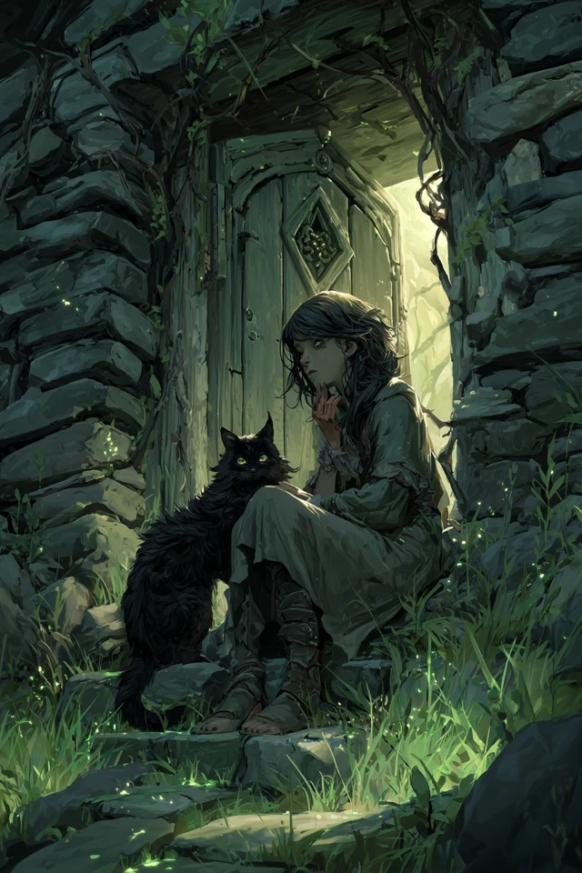
Good luck. Watch their faces when he says Senna's name.